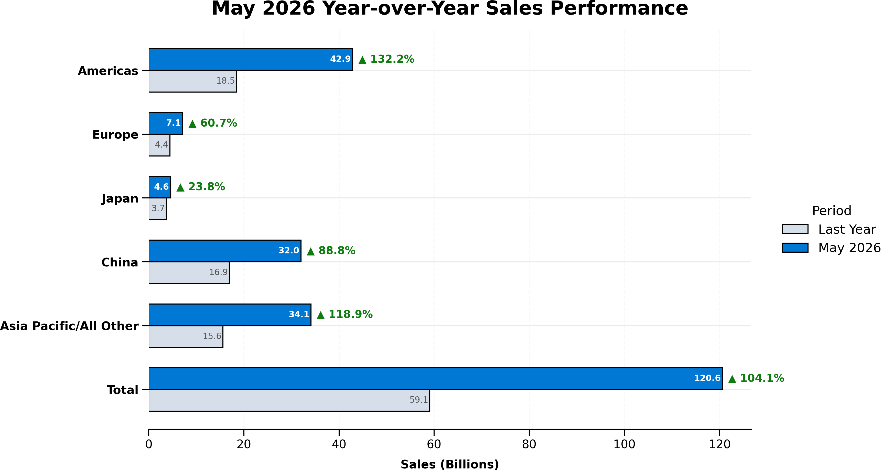
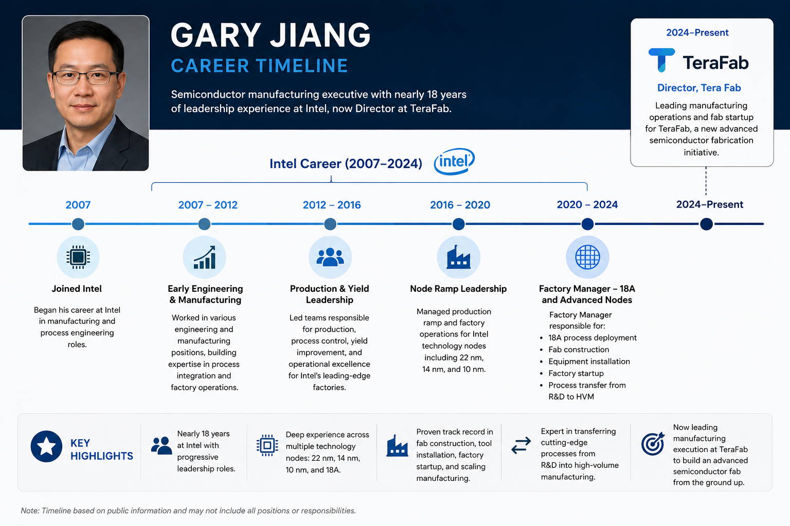

Semiconductor Sales Surge on AI-Driven Demand
Global sales hit $120.6 billion in May 2026, with the Americas leading the growth
Published: July 7, 2026
Global semiconductor sales reached $120.6 billion in May 2026, up 104.1% year-over-year and 9.2% month-over-month, marking one of the strongest growth periods the industry has seen in recent years. Every major region posted gains, but the Americas stood out with a remarkable 132.2% YoY increase, followed by Asia Pacific (+118.9%) and China (+88.8%), showing just how broad the current demand cycle has become.

The main driver behind this surge is the rapid build-out of AI infrastructure. Heavy investment in AI data centers is boosting demand not just for GPUs, but also for high-bandwidth memory (HBM), networking chips, power semiconductors, and advanced packaging. At the same time, the comparison is against a softer 2025 base, when the industry was still working through inventory corrections and weaker consumer demand. Taken together, this suggests the current growth is more than a short-term rebound and points to a deeper shift, with AI now becoming the key force shaping the semiconductor market.
Reference: https://www.wsts.org/, https://www.semiconductors.org/
What Gary Jiang's Appointment Says About Terafab
The Intel veteran who could help turn Terafab's ambitions into reality.
Published: July 2, 2026
When Terafab announced Intel veteran Gary Jiang as one of its first publicly identified leadership hires, it sent a clear message about the company's priorities. Jiang spent nearly 18 years at Intel, rising to Factory Manager, where he led factory startup, equipment installation, technology transfer, and high-volume manufacturing of advanced process technologies, including Intel's 18A node. Before Intel, he built expertise in semiconductor inspection and metrology at Rudolph Technologies, giving him a rare combination of process engineering and manufacturing leadership.

His appointment is particularly noteworthy as Terafab is reportedly planning to adopt Intel's 14A-MI manufacturing technology for its future semiconductor production. While the company has disclosed few technical details, recruiting an executive with first-hand experience in Intel's manufacturing ecosystem could significantly strengthen its ability to transfer advanced process technology into high-volume production. In the semiconductor industry, designing a leading-edge chip is only half the challenge-success ultimately depends on building a fab that can manufacture it reliably and at scale. Jiang's track record suggests Terafab is placing manufacturing excellence at the center of its strategy.
AI's Next Gold Rush: It's Not Just About GPUs
Samsung and SK Hynix's reported US$1.3 trillion investment signals a new era for the entire semiconductor ecosystem.
Published: July 1, 2026
When most people think about AI, they think about powerful GPUs. But behind every AI breakthrough is an entire semiconductor supply chain working to keep up. Samsung and SK Hynix's reported US$1.3 trillion investment shows the race is now about much more than computing power.
Memory, advanced packaging, manufacturing capacity, and materials are now central to AI scale-up. The companies that invest across the semiconductor value chain, from EUV lithography and photoresists to process engineering and supply chain resilience, will shape the next chapter of innovation.
Could Infineon's new Smart Power Fab in Dresden help shape the future of Europe?
Published: June 28, 2026
From electric vehicles and AI to renewable energy, advanced semiconductors are at the heart of tomorrow's technologies. Discover how Infineon's new Smart Power Fab in Dresden is strengthening Europe's semiconductor industry and helping power the innovations of the next decade.
Beyond manufacturing advanced chips, the facility is expected to create around 1,000 highly skilled jobs, strengthen Europe's supply chain resilience, and support a more sustainable semiconductor ecosystem. Find out why this €5 billion investment is considered a milestone for both the European chip industry and the technologies that will define our future.
Read the full article
Why Apple Can Charge More Than Dell and Lenovo
Published: June 28, 2026
Apple's latest laptop price increases have left many wondering: is this simply another premium price hike, or are there real cost pressures behind it? While AI-driven demand has pushed memory prices higher across the industry, that's only part of the picture.
In the article below, we look at what is really driving Apple's pricing and compare its strategy with Dell and Lenovo to understand why Apple continues to command a premium beyond the cost of the hardware itself.
Read the full article
AI-driven semiconductor demand
Accelerators, memory, and advanced packaging are shifting investment priorities across the sector.
Regional manufacturing resilience
Geopolitical and trade pressures continue to reshape sourcing and production decisions.
Next generation materials
Materials innovation remains a key differentiator in performance, power, and yield.